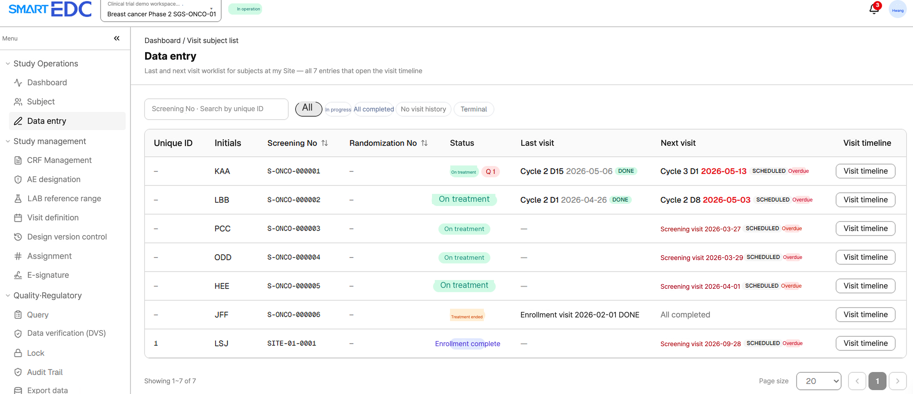
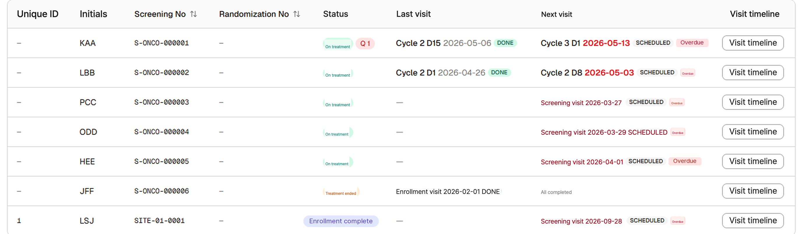
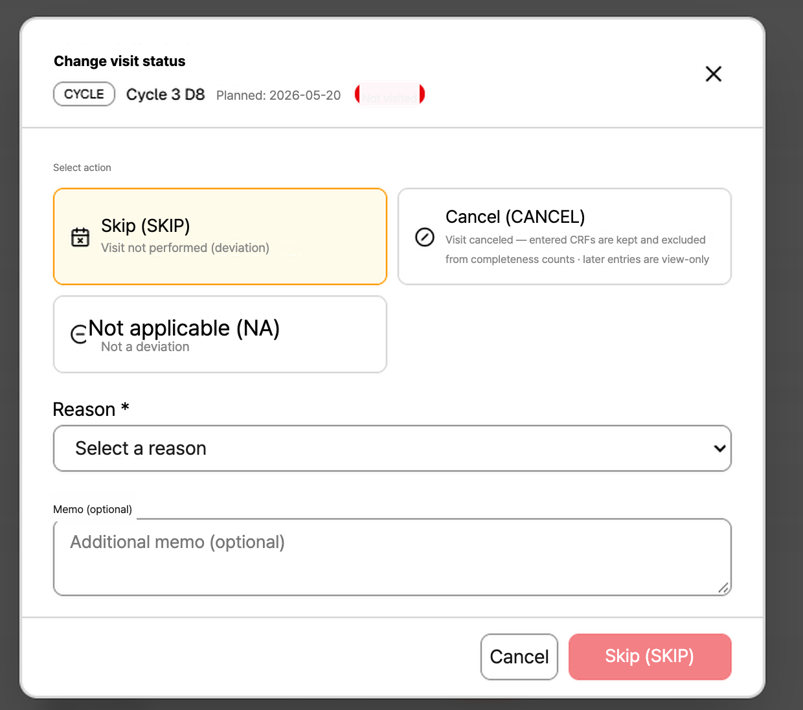
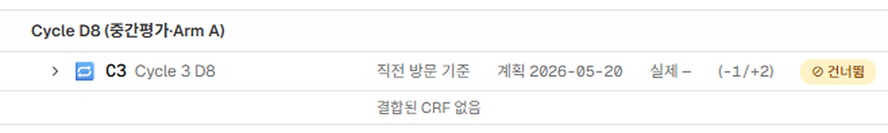
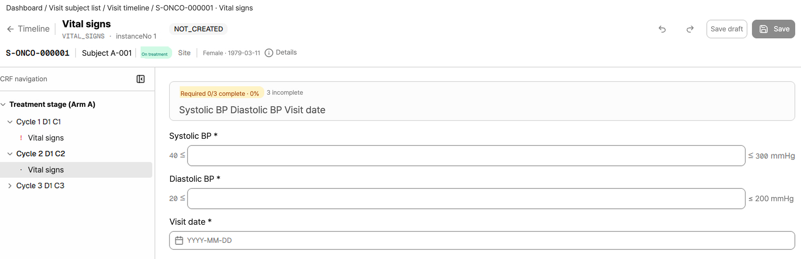
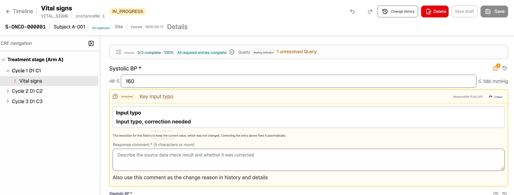

Data entry
SCR-VISIT-010·003·007 · SCR-CRF-005 · Worklist · Visit timeline · CRF entry · Query response
Data entry list
- 1.1Screen layout
- 1.2How to read the list
1.1Screen layout
Overview
This is the first screen that people who enter data every day open. For each subject in their charge, it puts the last completed visit and the next scheduled visit on one line, so they can see at a glance what to do today. You do not enter data directly from this list. You go through the visit timeline to the CRF of that visit and perform the entry there.
Screen guide

Left menu Study Operations > Data entry — The permanent entrance to this screen.
Search — Narrows the rows by Screening No or unique number.
Five status filters — All · In progress · All completed · No visit history · Terminal. For what each category means, see the table in 1.2.
Visit timeline ▶ — Opens all visits of that subject 2.1. Selecting any part of the row opens the same screen.
The navigation path is Dashboard / Visit subject list.
Below the title, the screen explains what this list is and shows the total count. For roles assigned to a specific Site, the Fixed to my Site badge also appears, and the list is automatically limited to subjects of their own Site.
Status column — The subject's current status and the number of unresolved Queries 1.2.
Last visit column — The visit whose completion came most recently, and its actual visit date.
Next visit column — The nearest incomplete scheduled visit and its scheduled date. The dates in these two columns use different reference points 1.2.
Count shown · page size · page navigation — Shown together at the bottom of the list.
Access paths
- • Left menu Study Operations > Data entry
- • A row in the Today's scheduled visits widget on the project dashboard
- • Visit worklist → in the Today's scheduled visits widget on the project dashboard
- • Timeline in the Visit status widget on the project dashboard
Precautions
Easily misunderstood behavior
- • For roles assigned to a specific Site (Principal Investigator, research nurse, and clinical research associate), only subjects of their own Site are shown. If a subject who should be in the list does not appear, first check the Site assignment. Search and filters cannot bring in subjects outside that scope.
1.2How to read the list
Overview
Each row is one subject. The two middle cells are the core of this screen. The left is the visit already completed, and the right is the visit still to come. Both cells and the action column lead to that subject's visit timeline. When you select a visit cell, the timeline opens with that visit selected.
Screen guide

Last visit cell — Selecting it opens the timeline with that visit selected. The date next to the visit name is the actual visit date.
Next visit cell — Selecting it opens the timeline with that visit selected. The date next to the visit name is the scheduled date.
Visit timeline ▶ — Opens all visits of that subject, without selecting a specific visit.
Status — The subject's current progress status (for example, “On treatment”, “Treatment completed”, or “Registered”).
Q N — The subject's number of unresolved Queries. It is not shown when the count is 0.
DONE — A completion mark attached only to the last visit cell.
SCHEDULED and Overdue — The first is the scheduled status, and the second is a warning that the allowed window (Window) has passed. A visit that has just entered its window shows Due soon.
All completed — There are completed visits and no visits left to do. Do not confuse it with No scheduled visit (orange), see the table below.
Four status filters (excluding All)
| Filter | Rows in this category | What to do |
|---|---|---|
| In progress | Subjects with a next visit still remaining | Carry out visits and entry on the scheduled date |
| All completed | Subjects with completed visits and no next visit | None — normal end state |
| No visit history | Subjects with neither completed visits nor scheduled visits | Action needed — Check why no visits were generated |
| Terminal | Subjects fixed in an end status | None — view only |
Precautions
Must check Data corruption · Form cannot be completed
- • “All completed” and “No scheduled visit” mean opposite things. The first means there is nothing left to do. The second means no visit has been generated at all, so you need to find the cause. Both appear in the same cell, so check the color (gray or orange) together with the wording.
Visit timeline
- 2.1Timeline layout
- 2.2Visit rows and CRF rows
- 2.3Change visit status
- 2.4Skip result
2.1Timeline layout
Overview
A screen that shows all visits of one subject in study schedule order. Visits are grouped into groups such as screening stage · treatment stage, and cyclic treatment is further divided into Cycles within them. Both data entry and visit status changes start from this screen.
Screen guide

Add Cycle manually — Creates more Cycles beyond the defined ones. You can select it only after the previous Cycle is closed.
Add visit manually — Adds a visit that was not in the plan (an unplanned or ongoing visit).
Gantt timeline tab — Shows the same content as a schedule bar chart. The default is the visit group tab.
The navigation path is Dashboard / Visit subject list / Subject · Visit timeline. The path changes if you come in from the subject screen.
Subject identification line — Screening No · Subject number · Subject status · Site.
Visit totals — Total · Completed · In progress · Scheduled · Not visited. If any Not visited visits remain, you must first resolve them 2.3.
Visit group — A major section of the study schedule. The number in parentheses is the number of visits in that group. Select the title to collapse or expand it.
Totals on the right of a group — The counts by status for the visits in that group.
Structure of a visit row — Shown in this order: reference · planned date · actual date · allowed window · status badge.
No linked CRF — The visit has no CRF linked to it. There is no data to enter for this visit. Links are managed in the CRF mapping of the visit definition.
Access paths
- • Data entry list → select a row, or Visit timeline ▶ 1.2
- • Data entry list → Last visit or Next visit cell (opens with that visit selected)
- • Subject list → row action menu → Visits
- • Project dashboard Visit status widget → select a subject
Precautions
Easily misunderstood behavior
- • A “Not visited” visit in the visit totals does not disappear if you leave it alone. A visit past its scheduled date must be performed, or resolved as Skipped, Canceled, or Not applicable, with a reason 2.3. A visit left as Not visited is counted as the subject's data not being complete.
2.2Visit rows and CRF rows
Overview
Selecting the expand mark on the left of a visit row shows the CRFs linked to that visit, one line each. Selecting a CRF row opens its entry screen 3.1. Selecting a visit row opens the details of that visit below the screen, where you change its status and check its history.
Screen guide

Visit row — Selecting it opens the details of that visit below. Use the expand mark on the left to show the list of linked CRFs.
CRF row — Selecting it opens the entry screen of that CRF 3.1.
Change status — Records whether the visit was performed, or resolves it as Skipped, Canceled, or Not applicable 2.3.
History — Checks the status change records that happened to that visit.
Group title and visit count — The study arm is shown with it, for example Treatment stage (Arm A).
Totals on the right of a group — The counts by status for that group.
The visits within a Cycle. In cyclic treatment, the same visit repeats in each Cycle.
Visit-level required-item count — How completely the required items of the CRFs linked to that visit are filled in.
Column headers CRF status and Query status — The badges in the CRF rows below show these two axes.
Badges in a CRF row — From the left: required-item count · entry status · Query indicator. If you see Q, that CRF has a Query to handle 3.3.
Header of the selected visit's details — Visit name · visit type · current status.
Main values in the details — Planned date · actual date · allowed window (Window) · Visit-Event status · Cycle number.
Precautions
Easily misunderstood behavior
- • The totals on a visit row and on a CRF row cover different scopes. The visit row adds up all CRFs linked to that visit, and a CRF row shows the value of that one CRF. If a visit shows 100% and has only one linked CRF, both numbers are the same, so check which number you are looking at before you decide.
2.3Change visit status
Overview
A window for resolving a visit that is past its scheduled date and was not performed. Only the actions available from the current status are shown. In the screenshot's Not visited status, three options appear: Skip, Cancel, and Not applicable. Whichever you select, a reason is required, and the record is kept in the audit trail.
Screen guide

Skip (SKIP) — A record that the visit itself was not performed. It becomes a deviation target.
Cancel (CANCEL) — Entered CRFs are not deleted. The visit is only excluded from the completeness count, and later entries become view only.
Not applicable (NA) — A visit that does not apply to this subject. It is not a deviation target.
Reason — Required. For Skip, you select the reason from the list registered in the project. If the list cannot be loaded, a direct input field replaces it.
Memo — Optional. Add it when the reasons in the list do not explain enough.
Run button — Shows the name of the selected action. It stays faded and cannot be selected until you choose a reason. The Cancel button next to it only closes the window.
Target visit — visit type · visit name · planned date · current status. Before you continue, check that the status badge reads “✕ Not visited”.
Close — Closes the window.
Action selection — The selected card shows a colored border. If you switch cards, the reason and note you were typing are reset.
The * next to the reason marks a required item.
The (optional) next to the note means you can leave it blank.
Four actions — only those that fit the situation are shown
| Action | When it appears | Deviation target | Reversible |
|---|---|---|---|
| Visit performed | While the visit is in progress | Judged by the completion date | Cannot be reversed |
| Skip (SKIP) | Not visited · no record of performance | Target | Can be restored |
| Cancel (CANCEL) | Not visited or in progress | Not a target | Can be restored |
| Not applicable (NA) | Not visited · no record of performance | Not a target | Can be restored |
Precautions
Must check Data corruption · Form cannot be completed
- • If you Cancel a cyclic (Cycle) visit, you can no longer add the next Cycle. This is because Performed, Skipped, and Not applicable count as closed, and Canceled does not. Resolve a Cycle you created by mistake as Not applicable, not as Canceled.
2.4Skip result
Overview
When you run Skip, the window closes and returns you to the timeline. The status badge of that visit row changes, and its visit name gets a strikethrough, so you can tell it apart in the list immediately. The actual date stays empty, and the reason you entered can be checked in the history of that visit 2.2.
Screen guide

The group and Cycle the visit belongs to — Skip applies only to that one visit and does not affect other visits in the same group.
Visit row — The visit name shows a strikethrough.
The actual date in the middle of the row stays —. The allowed window beside it keeps its planned value.
⊘ Skipped at the far right of the row — The result of the skip. To undo it, select that visit again and run Change status > Restore.
No linked CRF — This visit has no CRF linked to it. It is a separate indicator that has nothing to do with Skip.
Seven visit status badges
| Badge | Meaning | Can enter data |
|---|---|---|
| ○ Scheduled | A visit whose scheduled date has not yet arrived | Yes |
| ◐ In progress | A visit whose performance has started | Yes |
| ✓ Completed | A visit whose performance has finished | Yes |
| ✕ Not visited | A visit past its scheduled date that has not been resolved | Yes — resolution needed |
| ⊘ Skipped | A visit recorded as not performed (deviation target) | No |
| ⊗ Canceled | A canceled visit — existing CRFs are kept | View only |
| – Not applicable | A visit that does not apply to this subject | No |
Precautions
Must check Data corruption · Form cannot be completed
- • Skip is recorded as a deviation. You can undo it, but both the action and the restore remain in the history, so do not press it temporarily just to see what happens, and do not use it without checking the reason. If the visit can still be performed, leave the status unchanged.
CRF data entry
- 3.1Entry screen
- 3.2Save complete
- 3.3Query response
3.1Entry screen
Overview
The screen where you enter the actual data. The left side is a navigation area that moves between the CRFs of the same subject, and the right side is the entry area. When you first open it, no data has been created yet. Data is created only when you save. If you open the screen and leave without saving, nothing is kept.
Screen guide

Systolic blood pressure — A number entry box. The values on either side show the allowed range.
Diastolic blood pressure — Entered in the same way.
Visit date — Select the date with the calendar icon, or type it in directly.
Save draft — Keeps the entry in progress as a temporary copy. It skips validation and leaves no audit record, so it is not a final save.
Save — Confirms the entry. At this point the data is created, and validation and the audit record are performed together 3.2.
The navigation path is Dashboard / Visit subject list / Visit timeline / Subject · CRF name.
NOT_CREATED — Shows that nothing has been saved yet. After you save, it changes to IN_PROGRESS or COMPLETED 3.2.
The CRF code and the entry number. A CRF that is collected repeatedly in the same visit gets a higher number each time.
Subject identification line — Screening No · Subject number · Status · Site · Sex · Date of birth. Check the subject information with Details.
CRF navigation — Jump directly to another visit or CRF of the same subject. The collapse icon hides this area.
The CRF that is currently open is highlighted. An item with an exclamation mark is a CRF that still needs action.
Required-item count — Shows “0/3 complete · 0%” and the number of incomplete items. A CRF is not counted as complete until all required items are filled in.
List of incomplete items — Select an item to move to that input box. Use it to find blank boxes in a long form.
The allowed range and unit beside an input box. A value outside the range fails validation when you save.
Precautions
Must check Data corruption · Form cannot be completed
- • “Save draft” is not a final save. A draft is not validated and leaves no audit record, so if you leave the screen as it is, the data is not counted as official data. When you finish entering, be sure to confirm it with Save.
3.2Save complete
Overview
When you save, the data is created, and the display changes in several places on the screen. Because you saved with all required items filled in, the entry status is Completed. Because it has not been verified yet, the quality status is Awaiting verification. Once the data exists, Change history and Delete also appear.
Screen guide

Save — Confirms the entry.
The status changes to COMPLETED and Saved is shown. If required items were still missing, it becomes IN_PROGRESS.
Change history — Shows who changed which value, when, and how. It appears only after saved data exists.
Delete — Removes the entered data. The record remains, and a reason is required.
The required-item count changes to “3/3 complete · 100%” and “All required entries complete”.
Quality status — Awaiting verification. After source data verification (SDV) is finished it becomes SDV completed, and if no Queries remain to handle it becomes CLEAN.
Two icons on each item — The left one is the Query for that item, and the right one is the change history of that item. They appear after the data is created.
The saved values stay in the entry boxes. When you change a value and save again, you are asked for a reason for the change.
The current CRF is highlighted in CRF navigation.
The navigation path is the same as before saving. Saving does not move you to another screen.
Entry status and quality status — two separate axes
| Axis | Display | Meaning |
|---|---|---|
| Entry status | NOT_CREATED | Never saved (no data created) |
| Entry status | IN_PROGRESS | Saved, but required items remain |
| Entry status | COMPLETED | Saved with all required items filled in |
| Quality status | Awaiting verification | Source data verification (SDV) is not finished |
| Quality status | SDV completed | SDV is finished, but the data is not yet final or Queries remain |
| Quality status | CLEAN | Entry complete, SDV done for all items, and no Queries to handle |
Precautions
Easily misunderstood behavior
- • Entry completion and quality completion are different. “3/3 complete · 100%” only means that every required box is filled in. It has not yet been confirmed that the value matches the source data at the medical institution. For the data to be finally confirmed, both source data verification (SDV) and Query handling must be finished.
3.3Query response
Overview
When a Query (a request for confirmation) is raised on a value you entered, a response card opens directly below that item. You correct the value and write the response in the same place, and one save of the form processes both together. You do not need to move to a separate screen to send only the response.
Screen guide

Edit value — If checking the source data shows the value is wrong, correct it directly in this entry box.
The resolution method changes on the spot — if you correct the value it becomes Value corrected, and if you do not it becomes Keep current value. It is not a choice you make directly. It is a result determined by whether the value was changed.
Response comment — Required, and you must enter 5 characters or more. Describe the result of checking the source data and whether the value was changed.
Use this comment as the reason for change — If you corrected the value, the reason for change that would otherwise be asked for is covered by this comment. You do not need to enter the same content twice.
Save — Value correction and the response are processed together. A response is never saved while the value is left behind.
IN_PROGRESS — Because the value is being corrected, the entry status shows in progress.
N unresolved Queries — The number of responses still needed in this CRF. Responses that are already given but not yet closed are shown separately as Awaiting closure.
The Query icon and count to the right of an item. Select it to view the Queries of that item.
Card header — Status · Priority · Title.
Assignee and collapse. In a form with many items, the cards start out collapsed.
The Query text — what was asked for confirmation. Be sure to read it before you respond.
(5 characters or more) — If this condition is not met, saving is rejected.
History and details — Check the full conversation and processing history of that Query.
Precautions
Easily misunderstood behavior
- • Not everyone can respond to a Query. You must have response permission and also be the assignee or the person who raised it. If the card is visible but you cannot enter a response, you are not the assignee. Check the assignee in the Query list and pass it on.